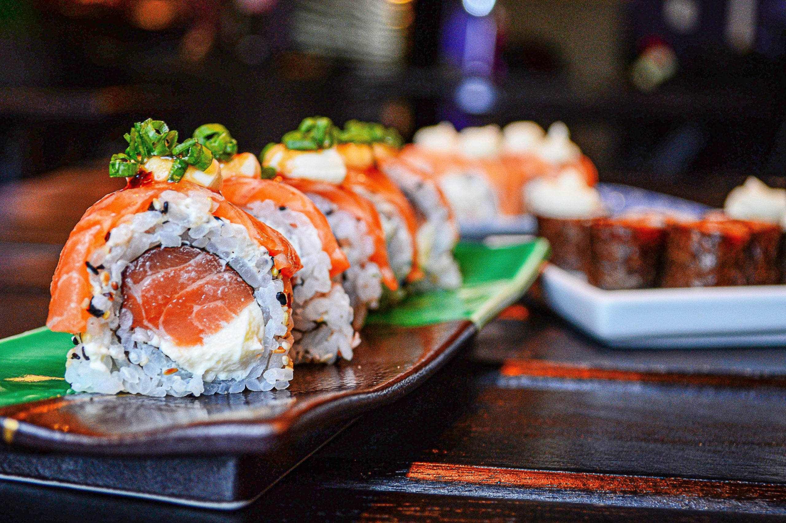

Sushi

Description
Sushi is made using seaweed to wrap the contents with primarily seafood and an assortment of compliments. There
can be avocado, cucumber, etc. Sushi is also usually topped with either a sauce or dipped in soy sauce and wasabi.
There are a plethora of options when it comes to sushi.
In our recipe, we use rice, seaweed, salmon, cream cheese, shrimp, and cilantro.
Ingredients
- rice
- seaweed
- salmon
- cream cheese
- shrimp
- cilantro
- sushi mat
Steps
- First you want to lay your seaweed wrap flat on the sushi mat.
- Second, you want to layer on your rice onto the seaweed wrap.
- Next, place your ingredients other than rice and seaweed at the closest side to you. (south)
- After you have all your ingredients gathered at the bottom, you want to roll it up with the sushi mat.
You want to press and try and form a square-ish shape.
- Now, keep on rolling and pressing on the sushi until you have a roll.
- Last step is to cut the roll into smaller pieces and enjoy!